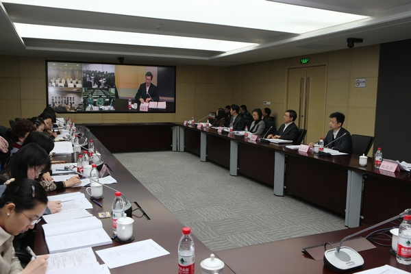

中注协召开2013年度全国培训工作（视频）会议
2013-04-09 10:32
3月29日，中注协召开2013年度全国培训工作会议。中注协副会长兼秘书长陈毓圭出席会议并讲话，中国注册会计师行业党委副书记杨晨辉作工作报告。
会议总结交流了2012年度行业培训工作做法和经验，研究布置了2013年度培训工作，并对行业信息系统（二期）培训模块进行讲解。
陈秘书长在讲话中充分肯定了行业近年来人才建设工作领域所取得的成绩，并深入分析了行业人才建设工作面临的新形势。他指出，十年来，中注协在人才建设领域的努力方向、工作理念、基本思路、总体布局始终没有动摇，一以贯之，毫不松懈，基本形成了内容完备、导向明确的制度体系，分类分级、注重实效的方法体系，各方参与、相互协同的组织体系。当前，行业的快速发展对高层次人才需求更加迫切，新准则的全面实施对提高从业人员执业水平的要求更加迫切，执业环境的变化对形成人才建设工作长效机制的需求更加迫切，需要打造一支规模适当、结构合理、梯次健全、素质过硬的专业人才队伍。
陈秘书长要求，行业人才建设工作中要进一步增强为行业培养人才的责任感、荣誉感、使命感，集思广益，全面推进行业人才战略。一是进一步把握好行业人才建设工作规律，既要传承好的做法，又要创新新的方式。加强对行业人才建设工作的理论研究，在理论研究的同时多做有益的实践尝试，并注意总结、提炼和升华，把好的工作做法逐渐制度化和长效化；二是进一步理清行业人才建设工作的重点，既要落实好专项工作，又要完成好常规工作。专项工作要继续落实到位，逐渐形成行业人才建设的品牌效应，凸显行业人才建设的成果，常规工作关系到行业长远发展，做得好一样会出成绩、出亮点，不能有轻视和懈怠；三是进一步发挥各方主体意识，既要面上推动工作，又要激发内在动力。要根据行业人才建设现有的框架和体系明确工作责任，完善工作措施，加大工作投入，改进工作方法，注重工作实效。尤其要激发广大从业人员“我要学”的积极性，加强对会计师事务所的指导和广大注册会计师的引导，使“以人为本”的科学发展理念和走群众路线的工作作风在行业人才建设工作领域得到充分彰显和全面落实。
本次会议采取远程视频方式召开，来自各省、自治区、直辖市及深圳市注协分管培训工作的秘书长、培训部门负责人及工作人员、部分中注协教育培训委员会委员，北京、上海、厦门三家国家会计学院教务部负责人及工作人员近130人参加了会议。

3月29日，中注协召开2013年度全国培训工作会议。
 京公网安备 11010802022122号
京公网安备 11010802022122号